Capítulo 6 ggplot: Personalización
Es posible que, aunque a nivel de datos tengamos nuestra tarea completa, queden elementos por perfeccionar en cuanto visualización. Revisaremos las principales opciones de personalización.
6.1 Títulos y ejes
dispersion<-dispersion+
ggtitle("Figura 1: Gráfico de dispersión")+ #Se añade título
xlab("Tipo de vehículo") + #Añade etiqueta eje horizontal
ylab("Rendimiento en ciudad") #Añade etiqueta eje vertical
dispersion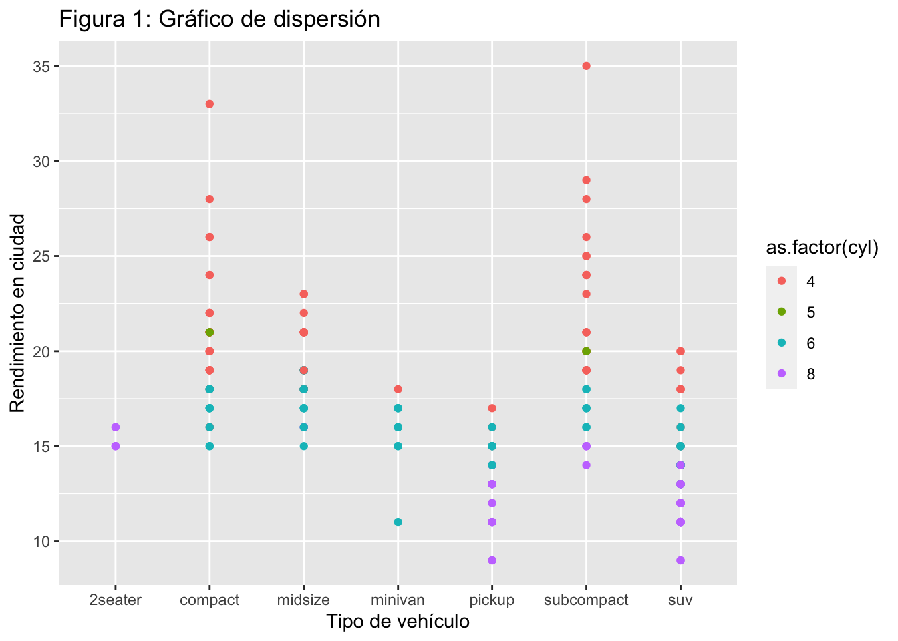
6.2 Etiqueta leyenda
Es importante escribir correctamtente el elemento respectivo a la leyenda. En este ejemplo corresponde a color, sin embargo también podría ser shape o fill.
dispersion<-dispersion+labs(color = "Cilindrada")
dispersion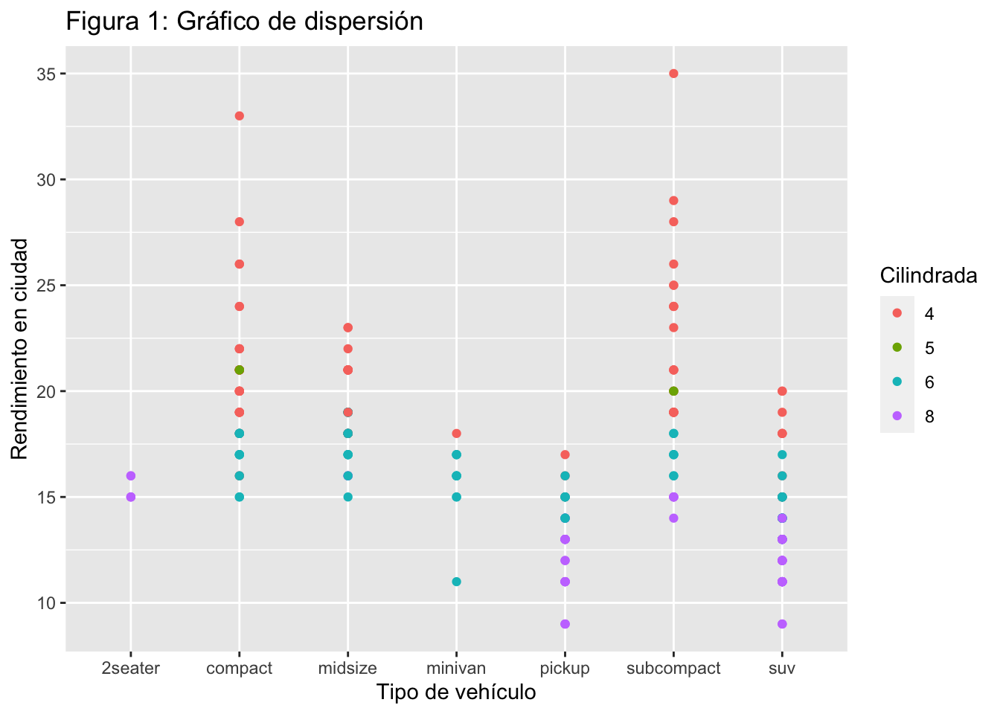
6.3 Posición leyenda
La función theme() nos permite editar muchos aspectos de nuestro gráfico. Uno de estos es la posición de la leyenda:
dispersión<-dispersion+theme(legend.position='bottom') #Para colocarlo arriba usar 'top'
dispersión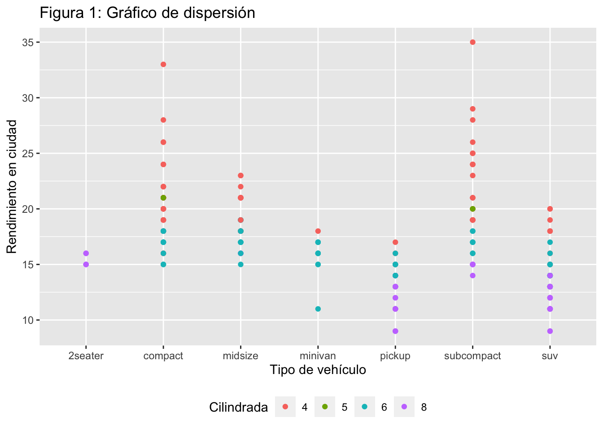
6.4 Añadir subtítulo y nota
dispersion<-dispersion+labs(subtitle = "Rendimiento en ciudad según tipo de vehículo",
caption = "Fuente: Datos contenidos en mpg.")
dispersion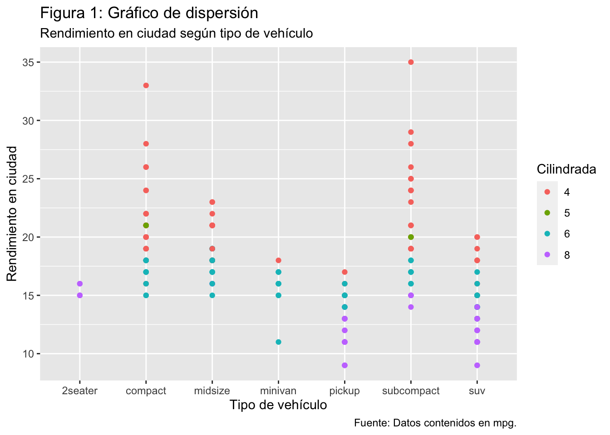
6.5 Saltos de línea
Para usar la tipografía con un estilo especial dentro de un texto a través de
dispersion+labs(subtitle = "Rendimiento en ciudad\nsegún tipo\nde vehículo",
caption = "Fuente: Datos contenidos en mpg.")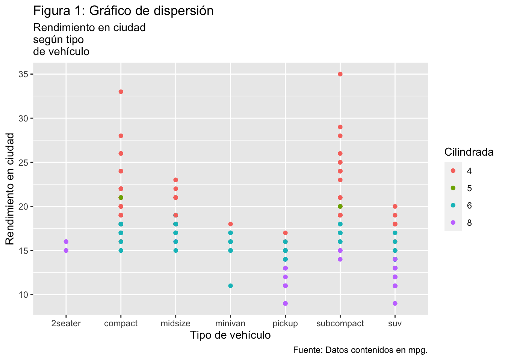
6.6 Girar ejes
A través de la función coord_flip() es posible intercambiar los ejes de nuestro gráfico:
dispersion+ coord_flip()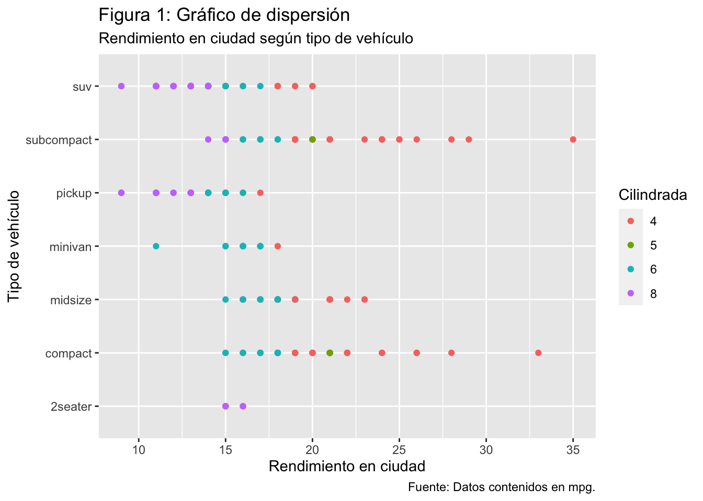
6.7 Rotar etiquetas eje
dispersion + theme(axis.text.x = element_text(angle = 90, vjust = 0.5, hjust=1))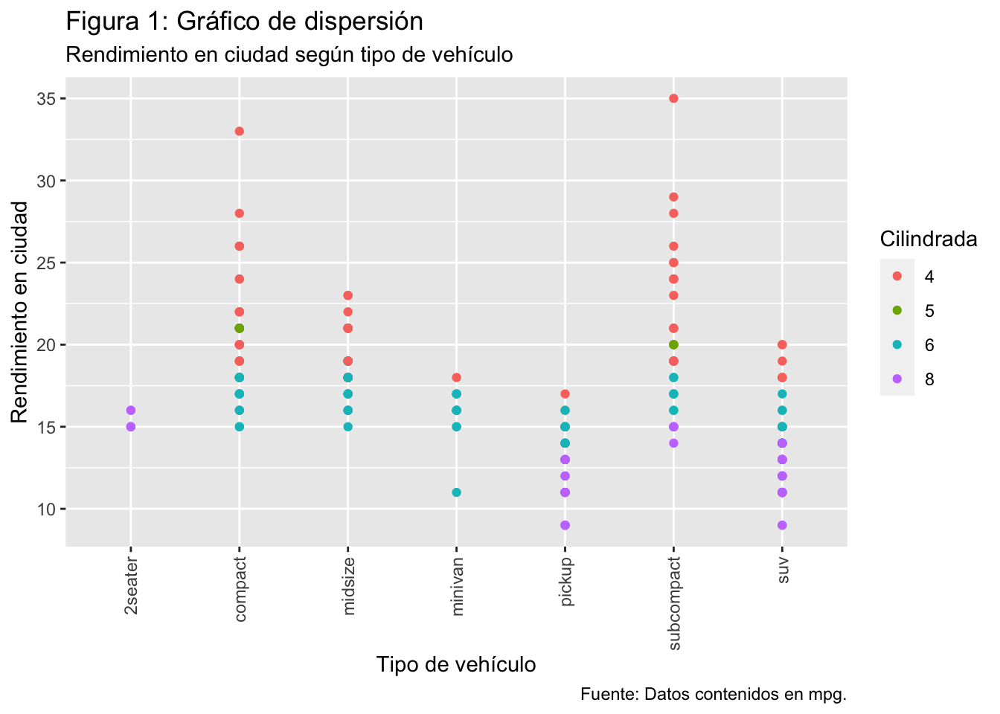
dispersion + theme(axis.text.x = element_text(angle = 45, hjust=1))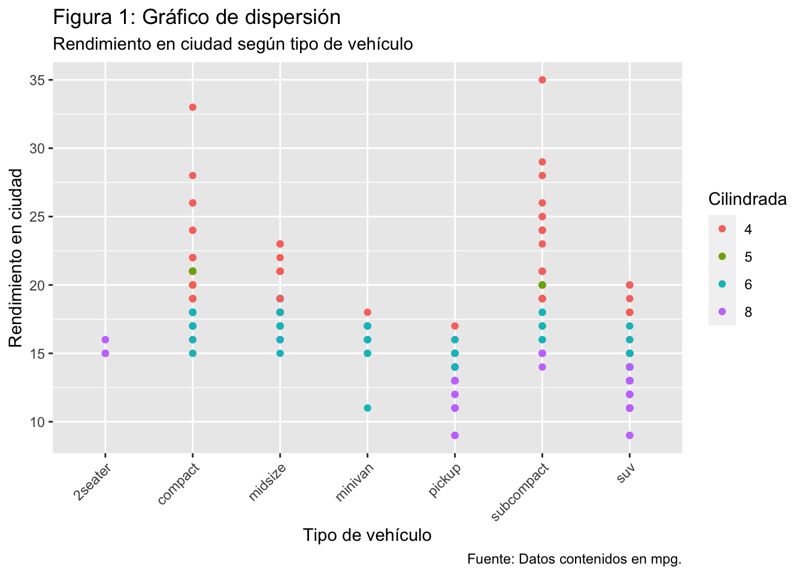
dispersion + theme(axis.text.y = element_text(angle = 45, hjust=1))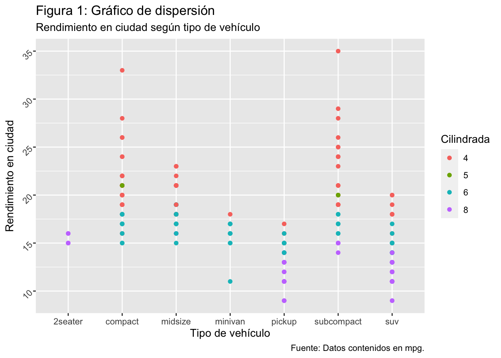 ## Temas completos
dispersion + theme_bw()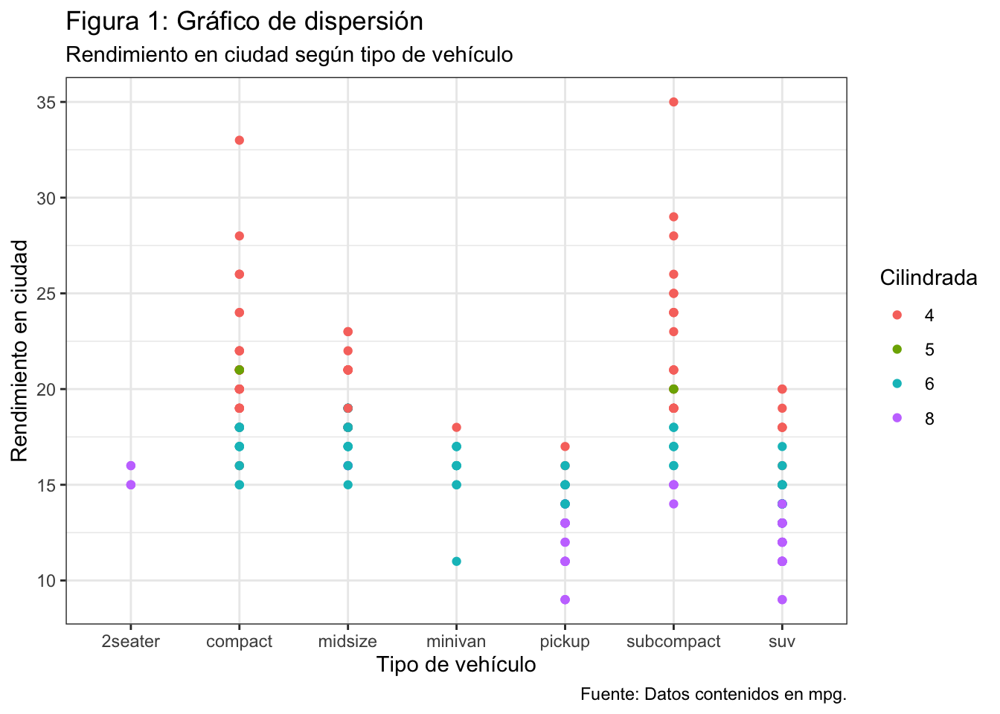
dispersion + theme_dark()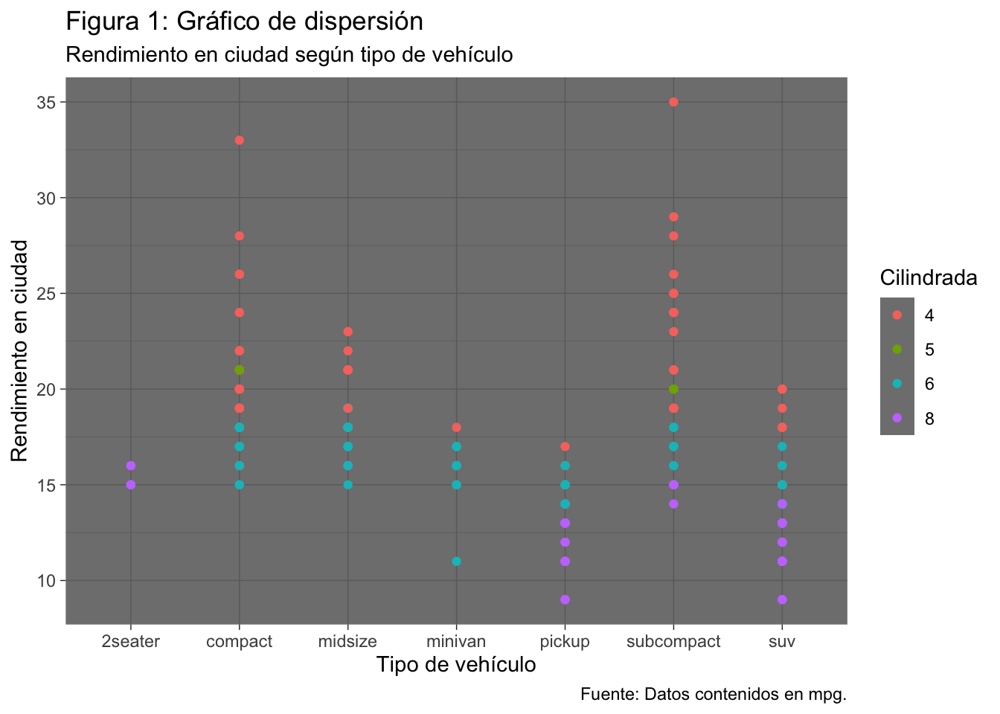
dispersion + theme_minimal()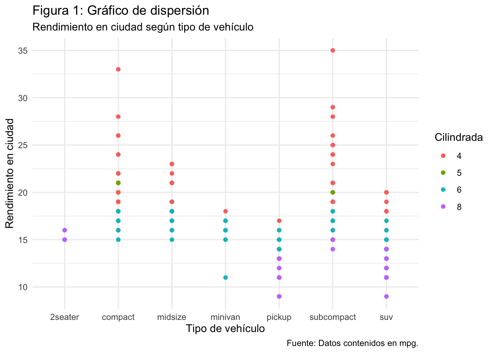
dispersion + theme_void()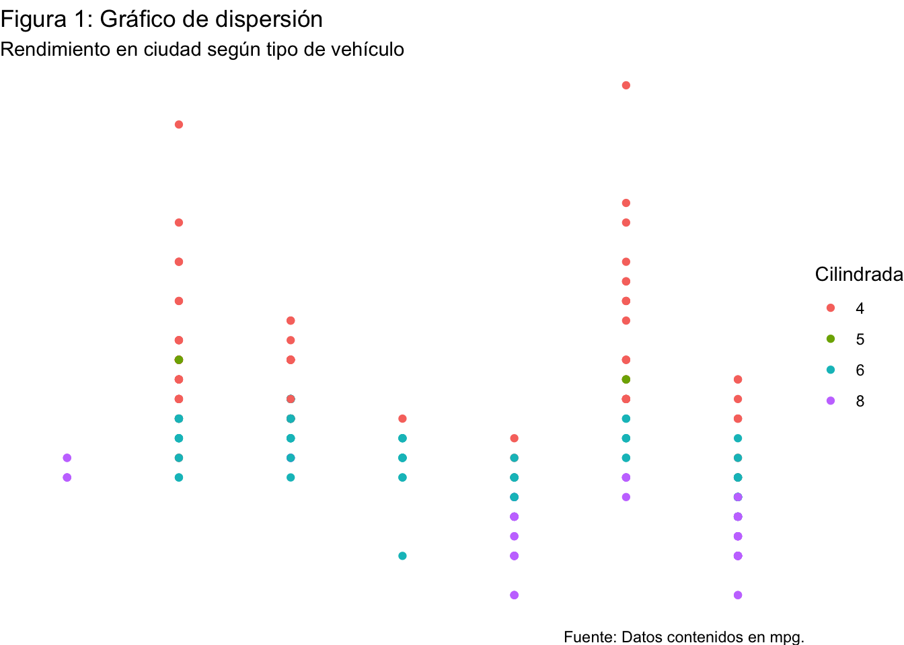